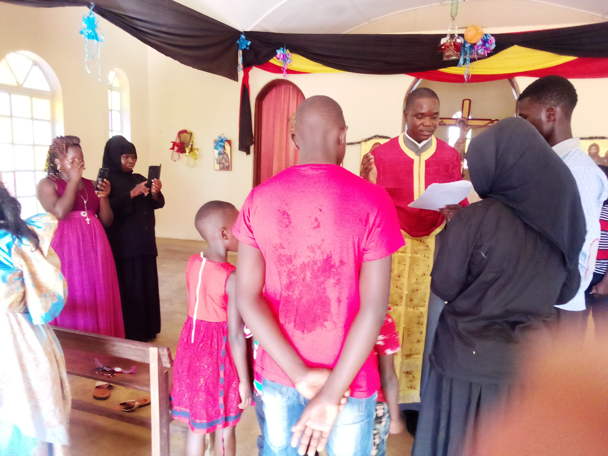
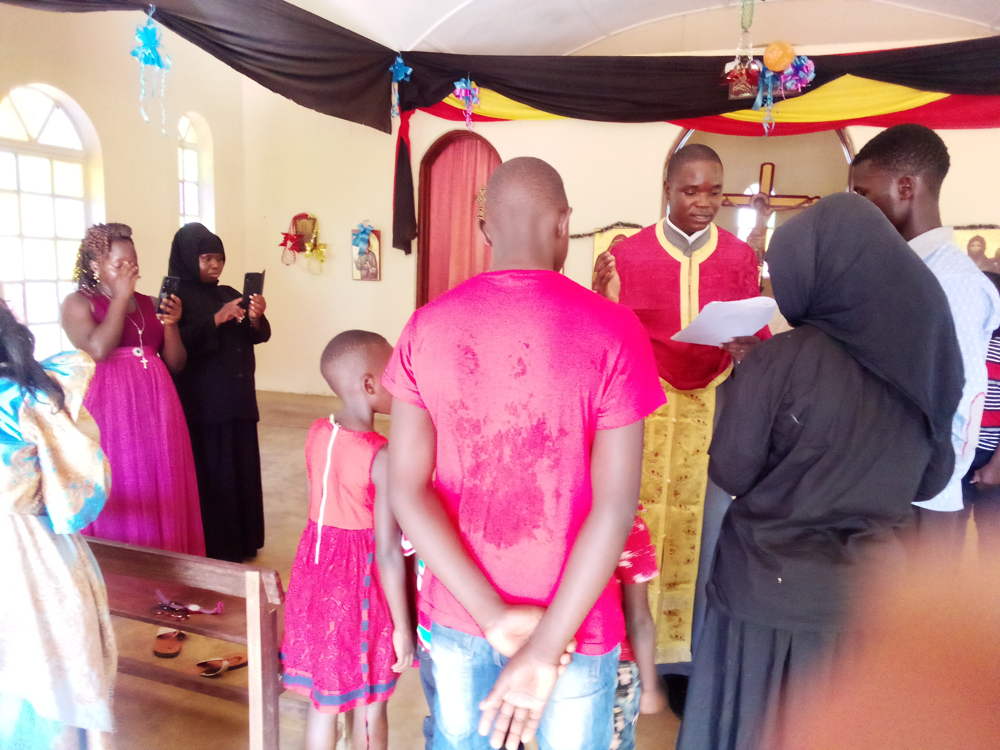

St. Luke Orthodox Church - Kabonge Parish
"Extending Apostolicity”“…Come and See…” John 1:43-46
Welcome
We welcome you to St. Luke Orthodox Church – Kabonge.We are pleased that you have visited our website to learn more about who we are and what we do. We believe that, by God’s grace, we shall be able to quench your spiritual thirst through our mystical life, philanthropic ministries, Catechism and many other services we endeavor to provide. Please enjoy your time here and we joyfully await your feedback for better!
 
- Liturgical Services
Saturday 4:50-6:00PM (Vespers)
Sunday 7:40-9:30AM (Orthros)
Sunday 9:30-11:30AM (Liturgy)
- Confession Times
Saturday 2:30-4:30PM
Latest Events
Important Stories
Todays Readings
Offertory
Mobile money:
Bank account: